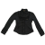
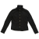
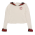
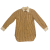
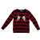
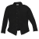
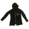
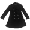

|
|








|
|
Adorn me with the scales of an angel. This library requires Javascript for viewing. |
|
Links
- https://www.lolitahistory.com/gallery/
- https://twitter.com/epsilon130/media
- http://mana-sama.com/
- https://eleganceinvain.neocities.org
- https://twitter.com/motohal1227

| Favorite Brands | Vivienne Westwood, Alice Auaa, Na+H, Algonquins, Putumayo, Alice and the Pirates, Sexy Dynamite London, (Black) Peace Now |
| Favorite Details | Buckles, studs, rings/buckles, torchon lace, leopard print, Union Jack motifs, and tartan. |
| Favorite Types of Bottoms | drop-crotch pants (sarouel) & flared legs. |
About The Wearer
I am a contemporary J-gothic, and identify with the essence of Visual, holding close ideals with Aristocrat and Lolita fashion. I also enjoy dressing in American avant garde street styles.
I don't have a community to turn to in the fashion world, but I hope to onlookers I inspire them to dress the ways they want. For me, it was gothic androgynous style.
Besides attending concerts and going on solitary walks around the city, I just like to be understood as the person I am without having to say it. Maybe you are a social exile, but why not wear your grotesqueness with a polished finish?